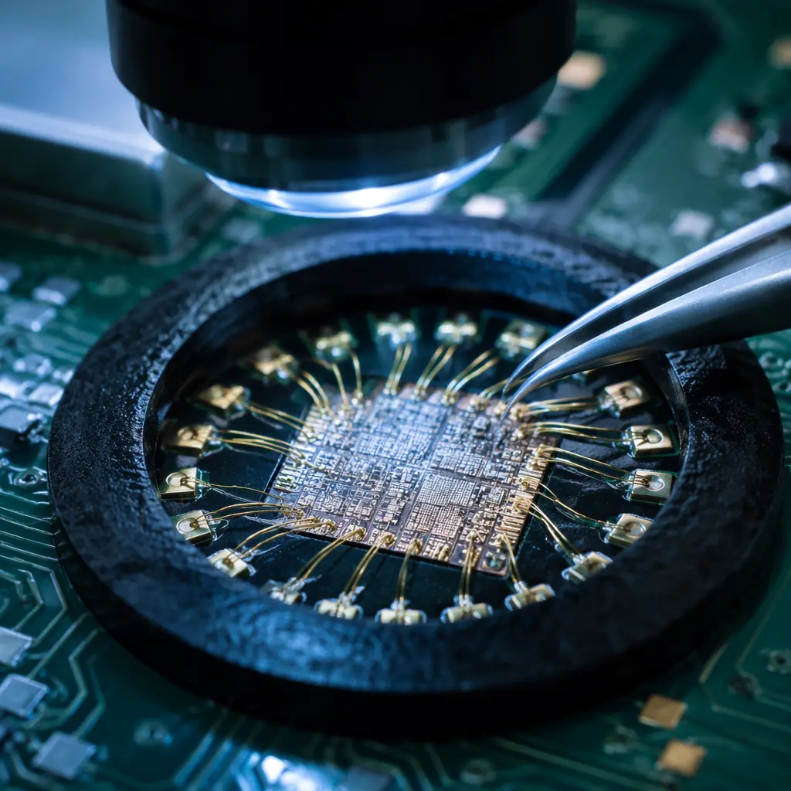
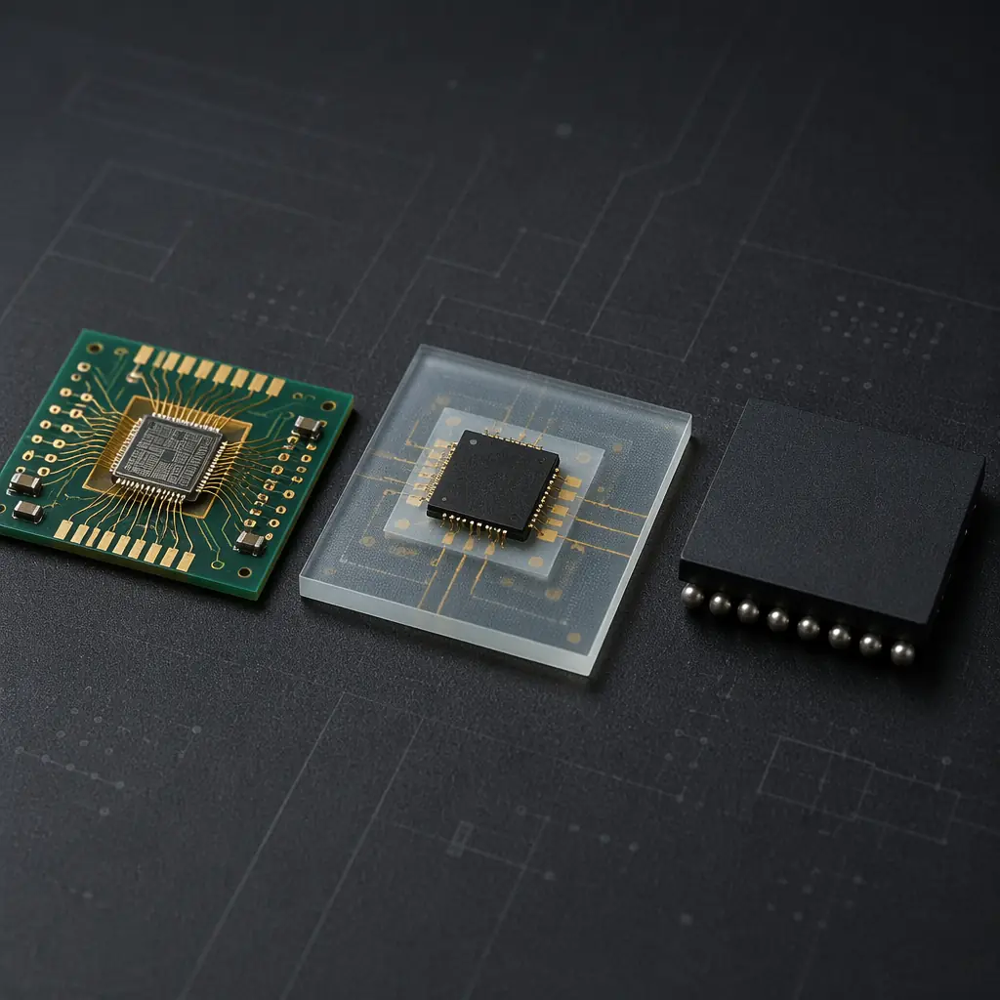

Most PCB designers live in the SMT world. It's the default, the comfortable choice. But when your product demands a 50% reduction in footprint, better thermal performance, or the kind of reliability that keeps a pacemaker beating for 10 years, surface-mount technology hits its ceiling. That's where chip-on-board (COB) and chip-on-glass (COG) enter the conversation — assembly technologies that mount bare semiconductor die directly onto substrates, eliminating the package entirely. This guide compares COB, COG, and SMT across the dimensions that matter: size, cost, thermal performance, and long-term reliability.
At Huaxing PCBA, we operate dedicated COB bonding lines alongside our 8 SMT lines, giving us the rare ability to offer all three technologies under one roof. Whether you need 25µm gold wire bonds for an implantable medical sensor or high-volume COB for LED arrays, understanding the tradeoffs starts here.

What Is Chip-on-Board (COB) Assembly?
COB mounts a bare, unpackaged semiconductor die directly onto a PCB or ceramic substrate. The die is attached with conductive or non-conductive epoxy, then wire-bonded — typically with 25µm gold or aluminum wire — to connect the die pads to the substrate traces. Finally, a glob of black epoxy (glob-top encapsulation) seals the die and bond wires against moisture and mechanical damage.
The key number: COB reduces the total footprint of a packaged IC by 40–70% compared to the same die in a QFN or BGA package. That's not an incremental improvement — it's the difference between fitting a design into a hearing aid versus needing a larger enclosure.
Die Attach — The Foundation Step
The bare die is picked from wafer and placed onto the substrate with ±5µm placement accuracy. Conductive silver epoxy provides both mechanical attachment and electrical connection for the die backside (common for power devices); non-conductive epoxy is used when the die backside must remain electrically isolated. Cure time: 1–2 hours at 150°C. The quality of this bond directly affects thermal resistance and long-term reliability.
Wire Bonding — Gold vs Aluminum vs Copper
Ultrasonic or thermosonic bonding welds 25µm–50µm diameter wire from die pad to substrate pad at speeds up to 15 bonds/second. Gold wire (99.99% Au) dominates for high-reliability applications due to corrosion resistance. Aluminum wire suits power devices where larger diameters (up to 500µm) carry higher currents. Copper wire — growing in cost-sensitive consumer applications — offers 30% better electrical conductivity than gold at one-tenth the material cost, though it requires forming gas (95% N₂ / 5% H₂) during bonding to prevent oxidation.
Encapsulation — Glob-Top vs Dam-and-Fill
The bonded die and wires must be protected. Glob-top — a single dome of liquid epoxy encapsulant dispensed over the entire die area — is the most common method, adding approximately 0.5–1.5mm of height. Dam-and-fill uses a higher-viscosity epoxy to build a perimeter dam first, then fills the cavity with a lower-viscosity encapsulant — better for dies with sensitive surface structures (MEMS sensors, SAW filters). Both methods achieve IPC Class 3 reliability when properly cured. For context on IPC classification, see our IPC Class 2 vs Class 3 comparison.
Key Takeaway: COB eliminates the IC package — wire bonds connect the bare die directly to your PCB. The result is 40–70% smaller footprint, shorter signal paths (less parasitic inductance), and better thermal coupling to the substrate. But it requires controlled cleanroom bonding and encapsulation processes that most PCB assembly houses don't have.
COG (Chip-on-Glass): When the Substrate Is the Display
Chip-on-Glass is a specialized subset of COB where the substrate is glass — almost always an LCD or OLED display panel. The driver IC is mounted directly onto the glass edge using anisotropic conductive film (ACF) rather than wire bonds. This is the technology behind every smartphone, smartwatch, and automotive instrument cluster display.
| Parameter | COB | COG | SMT |
|---|---|---|---|
| Substrate | PCB, ceramic, metal-core | Glass (display panels) | PCB (any) |
| Connection method | Wire bonding (Au/Al/Cu) | ACF bonding (gold bumps) | Solder reflow |
| Typical bond pitch | 60–100µm | 30–50µm | 0.4–0.8mm (BGA/QFN) |
| Encapsulation | Glob-top epoxy | Edge sealant + bezel | None (package = protection) |
| Footprint reduction vs SMT | 40–70% | 60–80% | N/A (baseline) |
| Reworkability | Very difficult | Essentially impossible | Standard rework |
| Typical volume | 1K–10M units | 100K–100M units | 1–1M+ units |
The ACF process is fundamentally different from wire bonding. An anisotropic conductive film — a thermoset epoxy film loaded with conductive micro-particles — is placed between the driver IC's gold bumps and the glass ITO traces. Heat and pressure (typically 180–200°C at 50–100N/cm² for 10–20 seconds) cure the epoxy and trap conductive particles between the bumps and traces, creating Z-axis-only electrical connections. The result is a bond pitch as fine as 30µm — tighter than any solder-based process.
COG's primary tradeoff: it's a one-way street. Once bonded, the driver IC cannot be reworked. A defective bond means the entire display panel is scrap. This drives the economics toward very high volumes where process yield exceeds 99.95% — the territory of display fabs, not general-purpose assembly houses.
When to Choose COB Over SMT
The decision tree is simpler than most engineers think. COB wins in three scenarios, loses in two, and competes on cost in one.
Scenario 1: Extreme Miniaturization
When your PCB real estate budget is exhausted and you've already pushed SMT to 0201 passives and 0.3mm pitch BGA, the next step is eliminating packages entirely. A bare die with COB wire bonding occupies 30–60% of the area of the same silicon in its smallest available package. This is the driving force behind COB in hearing aids, injectable medical sensors, and in-ear wearables. Read our medical device PCB guide for Class 3 reliability requirements in these applications.
Scenario 2: Superior Thermal Performance
In a packaged IC, heat travels through: die → die attach → leadframe → solder → PCB copper → thermal vias → heatsink. Each interface adds thermal resistance. In COB, the die is bonded directly to the substrate with a thin (25–50µm) epoxy layer — eliminating the leadframe and solder interfaces. Junction-to-board thermal resistance (θJB) drops by 30–50% compared to an equivalent QFN package. For power LED arrays and high-brightness laser diodes, this is the difference between needing a heatsink and not. Our thermal management guide covers substrate-level heat dissipation strategies in depth.
Scenario 3: High-Shock and Vibration Environments
Solder joints are fatigue failure points under cyclic stress. COB wire bonds — properly encapsulated — eliminate dozens of solder joints per IC. The glob-top epoxy distributes mechanical stress across the die surface rather than concentrating it at the package-solder-PCB interface. Military and aerospace electronics — where MIL-STD-810 vibration profiles must be survived — routinely specify COB for this reason. See our aerospace & defense PCB requirements for the full qualification framework.
When SMT Still Wins: (1) Component variety — a design with 50 different IC types cannot economically source all as bare die. Bare die availability is limited to high-volume parts (microcontrollers, LED drivers, sensor ASICs). (2) Rework requirements — if field repair is part of your product strategy, COB is the wrong choice. Glob-topped assemblies are essentially non-reworkable without specialized laser decapsulation equipment.
COB Cost Economics: When Bare Die Beats Packaged ICs
The unit economics flip at surprisingly low volumes. A bare die typically costs 15–40% less than the same silicon in its smallest QFN package — before assembly. But COB assembly adds wire bonding cost per die. The crossover point depends on die complexity:
| Die Type | Bond Pads | COB Assembly Cost/Die | Package Cost/Die | COB Advantage at Volume |
|---|---|---|---|---|
| LED (2 pads) | 2 | $0.003–0.008 | $0.02–0.05 (PLCC) | >5K units |
| Simple MCU (8–32 pads) | 8–32 | $0.03–0.12 | $0.15–0.50 (QFN) | >10K units |
| Complex ASIC (80–200 pads) | 80–200 | $0.50–2.00 | $2.00–8.00 (BGA) | >50K units |
| Sensor/MEMS (4–16 pads) | 4–16 | $0.02–0.06 | $0.30–1.00 (LGA) | >3K units |
For LED arrays — a COB sweet spot — the economics are decisive. A 100-LED COB array costs approximately $0.30–0.80 in assembly labor vs $2.00–5.00 for individually packaged SMT LEDs, plus the PCB area savings. For general-purpose electronics, the break-even is around 5,000–10,000 units for simple dies. Below that, the NRE for bonding tooling (typically $2,000–8,000 per die type for the bonding capillary and program) dominates. Our PCB NRE and tooling costs guide covers these setup charges in detail.

Design Rules for COB: What Your PCB Layout Needs
COB doesn't just change assembly — it changes PCB design. The bond pads on your substrate must match the die pad layout exactly, and the routing constraints are unforgiving:
Bond Finger Design — Length, Width, and Plating
Each die pad maps to a gold-plated bond finger on the PCB. Finger width: minimum 2× wire diameter (50µm for 25µm wire). Finger length: 150–300µm beyond the bond point. Surface finish: ENIG or soft gold — ENEPIG also acceptable. HASL and OSP are incompatible (surface roughness and oxidation prevent reliable bonding). The bond finger must be connected to a via within 1mm of the bond point to minimize stub inductance. For surface finish selection, see our complete surface finish guide.
Keep-Out Zones Around the Die
The die attach area requires a clean, flat surface — no vias, no solder mask openings, no silkscreen within 0.5mm of the die edge. The wire bond loop extends above the PCB surface by 150–250µm, and the glob-top encapsulant spreads beyond the bond fingers by approximately 1.0–1.5mm in all directions. Any component within this keep-out zone risks being buried in epoxy or interfering with the bonding capillary. Design your layout with the encapsulant keep-out first, then place passives outside it.
Substrate Flatness — The Hidden Requirement
Wire bonding requires substrate flatness better than ±25µm across the die area. Standard FR-4 at elevated temperature (bonding stage operates at 120–150°C) can warp beyond this limit, especially on thin boards below 0.8mm. For COB on thin PCBs, specify High-Tg FR-4 (Tg ≥170°C) or use a metal-core substrate for dimensional stability. Ceramic substrates (Al₂O₃ or AlN) offer the best flatness — ±5µm — and are the default choice for high-reliability COB in aerospace applications.
COB vs BGA: The Packaging Decision Framework
Many designs oscillate between COB and fine-pitch BGA. The right answer depends on three factors beyond the obvious cost comparison:
Signal integrity at the die-to-board interface: A BGA package adds 1–3nH of parasitic inductance per connection (package leadframe + solder ball). A 25µm gold wire bond adds 0.5–1.0nH — roughly one-third the parasitic inductance. For RF and high-speed digital above 5 Gbps, this difference matters. Testability: A packaged IC can be tested before assembly — you know it works. A bare die must be trusted from the wafer probe data, and the first time you know the assembly is good is after COB and encapsulation. Supply chain: Bare die availability is a fraction of packaged IC availability. If your MCU is only sold in QFN, COB isn't an option — period. See our BGA assembly guide for the SMT alternative's full requirements.
Getting Started With COB Assembly
If your product roadmap is pushing toward miniaturization limits, COB is the logical next step. Start with these three actions: (1) Identify the one or two ICs in your BOM that consume the most PCB area and check whether bare die versions exist — your semiconductor vendor's field application engineer can help. (2) Request a bondability assessment from your assembly partner — not every PCB finish supports wire bonding, and your stackup may need revision. (3) Budget for NRE: bonding tooling (capillary + program) runs $2,000–8,000 per die type, and first-article qualification typically requires 10–20 assemblies with cross-section analysis.
At Huaxing PCBA, our COB line handles die sizes from 0.5mm × 0.5mm to 15mm × 15mm with up to 200 wire bonds per die. We support gold, aluminum, and copper wire bonding with in-house encapsulation and IPC Class 3 inspection. Explore our full PCB assembly capabilities or contact our engineering team with your die specifications for a COB feasibility assessment.